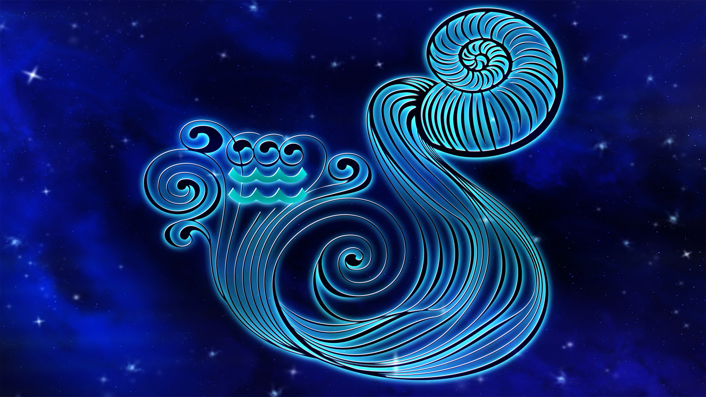

PISCIS
Por último, al signo Piscis que abarca entre el 20 de febrero y el 20 de marzo se le atribuyen características como la creatividad, imaginación, la sensibilidad, la amabilidad, la intuición, la empatía, la paciencia y la facilidad para soñar. Además, los Piscis suelen ser personas tranquilas que evitan meterse en problemas e incluso les llega a costar rebelarse ante algunas injusticias.
Piscis es un signo mutable y de agua, también es el último signo del zodiaco, precisamente por eso, es el más rico y complejo de todos. Sensible ante el sufrimiento de los demás, responde con buena voluntad y ganas de ayudar. No le gusta sentirse preso y ni respeta las convenciones, así, por las buenas, aunque tampoco tiende a luchar contra lo establecido, sencillamente, discurre por otro lado. Los Piscis tienden a vivir de una manera emocional más que racional, de forma instintiva e intuitiva más que de forma lógica. Les cuesta mucho transmitir lo que perciben, no saben expresarlo con palabras sino con acciones... Una clave para los Piscis es cómo contactan con su sensibilidad.
Además, aunque suele decirse de Piscis que es el signo de la ingenuidad, cuando es su respuesta ante el mundo de las sensaciones que contempla y percibe lo que le hace ser ingenuo o escéptico, dos extremos de la misma cuerda. En el amor, son personas fieles, adaptables y que buscan incansablemente una unión con la mente y el espíritu de su pareja más que una unión puramente sexual. Necesitan soñar conjuntamente con su media naranja y sentir para dar un amor puro y un sexo muy especial.
ALGUNOS FAMOSOS CON ESTE SIGNO
Rihanna: nacida el 20 de febrero de 1988 Una reina caribeña a la que apoyamos. Rihanna no es ajena a la creatividad. Como hace un Piscis, capta exactamente lo que sentimos sin decir demasiado.
Olivia Rodrigo: nacida el 20 de febrero de 2003 El hecho de que Olivia sea Piscis es justicia astral. Los piscis suelen vivir eventos frustrantes, que solo pueden ser expresados a través de una canción. La voz de la cantante hace que todas sus canciones tengan ese toque de ensueño. Además, con su Sol regido por Júpiter, tiene la habilidad de contar historias fascinantes.

Becky G: nacida el 2 de marzo de 1997 Piscis tiene la capacidad de iniciar conversaciones incómodas. Becky G lo hizo con sus canciones de reguetón. Las mujeres también podemos hablar sobre sexo en las mismas.

ACUARIO
La personalidad de los Acuario nacidos entre el 21 de enero y el 19 de febrero según la astrología occidental, suele ser muy abierta. Son simpáticos, divertidos, originales, idealistas, lógicos, con sentido del humor, soñadores, imaginativos, honestos, leales, tolerantes y sin prejuicios.
Acuario es un signo fijo y de aire, y sin duda, es el signo con mayor capacidad para la invención de toda la rueda zodiacal. Simpático, original y brillante, Acuario también es un signo muy humanitario, al mismo tiempo que independiente e intelectual. Sus puntos negativos se encuentran en su inestabilidad e imprecisión y en su tendencia a llevar la contraria casi por sistema. Las personas nacidas Acuario hacen gala de de una sinceridad e idealismo a prueba de bombas. Amantes de todo lo original, tienen montones de ideas nuevas agolpadas en sus mentes, lo que pasa es que cuando van a poner en marcha una de ellas, sale otra, y cuando van a poner esa en marcha, sale otra, y otra son pura creatividad.
Generalmente Acuario necesita moverse con libertad, sin condicionantes ni ataduras; la posesión no entra dentro de su modo de ver la vida, además, es un signo caracterizado por su desapego. En el amor, la intimidad no es su punto fuerte; los pertenecientes a este signo suelen sentirse demasiado vulnerables y poco cómodos cuando no se sienten seguros. De todas maneras, tampoco son unos santurrones que practican el celibato como penitencia este signo ama el sexo e irradia una energía sexual potentísima.
ALGUNOS FAMOSOS CON ESTE SIGNO SON
Harry Styles es un cantante y compositor británico de música pop, ex miembro de la boy band One Direction, y el primer hombre que consigue ocupar en solitario la portada de Vogue USA. Harry Styles nació en Cheshire (Reino Unido) en 1994 y creció junto a su madre y su hermana después de que sus padres se divorciaran.
Shakira Isabel Mebarak Ripoll, nacida en Barranquilla, Colombia el 2 de febrero de 1977, es una cantante, compositora y bailarina colombiana que emergió en la escena de la música latina a principios de los 90 y desde el primer momento se convirtió en el número 1latino en ventas.

Neymar da Silva Santos Júnior nació el 5 de febrero de 1992 en Mogi das Cruzes, en São Paulo, Brasil. Desde pequeño fue un apasionado del futbol siguiendo los pasos de Neymar Sr., su padre y exfutbolista.